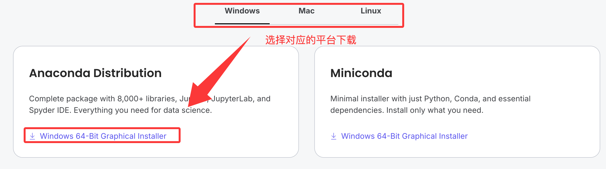

Jupyter Notebook Installation
Jupyter Notebook is aweb-based interactive computing environment, we can think of it as a smart notebook:
- Write notes: Like using Word, record text, formulas, and images in it.
- Write and run code: Write Python code directly in cells, click Run to see results immediately.
- Display results: Charts and data tables generated by code are displayed directly in the notebook.
Jupyter Notebook is especially suitable fordata cleaning, statistical analysis, machine learning model training, and visualization, because you can complete all the work of code, results, and explanations in one document.
Prerequisites: Python Environment
Jupyter Notebook itself is written in Python, so the prerequisite for installing it is that Python and a package management tool are already installed on your computer.pip。
1. Check if Python is installed
Open yourcommand line tool：
- Windows: Search in the Start menu
cmdorCommand Prompt。 - macOS: Open
Application->Utility->Terminal。 - Linux: Use the shortcut key
Ctrl + Alt + TOpen the terminal.
In the opened command line window, enter the following command and press Enter:
python --version
or
python3 --version
If you see something likePython 3.8.10this version number output (Important: The version number must be 3.3 or above), it means Python is already installed.
2. Check if pip is installed
pipIt is Python's software installation manager, usually comes with Python. The check command is as follows:
pip --version
or
pip3 --version
Similarly, if you see version information, it meanspipis also in place.
3. If Python is not installed
If your computer doesn't have Python yet, don't worry, the installation is very simple.
Recommended method: Visitthe official Python website, download the latest stable version (e.g., Python 3.11.x). When downloading,be sure to checkAdd Python to PATHthis option, this saves the trouble of manually configuring environment variables later. Then, like installing ordinary software, click throughNextto complete the installation.

After installation, repeat steps 1 and 2 above to confirm the installation is successful.
Install Jupyter Notebook using pip
After ensuring Python and pip are ready, installing Jupyter Notebook requires only one command.
In your command line tool, enter the following command:
pip install jupyter
Command explanation：
pip: Invokes Python's package management tool.install: Tells pip you want to install something.jupyter: The name of the package to be installed.
After pressing Enter, you will see the command line start downloading and installing Jupyter Notebook and its related components.

Note: If you are using macOS or Linux, or if you encounter permission issues, you may need to use
pip3or add before the commandsudo（macOS/Linux）：
pip3 install jupytersudo pip install jupyter(will ask for your computer password)If the installation is slow, you can use a domestic mirror:
pip3 install jupyter -i https://pypi.tuna.tsinghua.edu.cn/simple
Verify successful installation: After installation is complete, you can enter the following command to check the Jupyter version to ensure it is installed correctly:
jupyter --version
If version information is displayed, for examplejupyter core : 5.8.1, it means the installation was successful!
Selected Jupyter core packages... IPython : 8.18.1 ipykernel : 6.31.0 ipywidgets : 8.1.8 jupyter_client : 8.6.3 jupyter_core : 5.8.1 jupyter_server : 2.17.0
If you encounter a similarzsh: command not found: jupyterproblem, the reason is that the zsh terminal has not loaded Jupyter's environment variables. Solution:
- 1. First verify whether Jupyter is installed successfully, enter pip3 show jupyter, if version information is displayed, the installation is successful.
- 2. Runecho 'export PATH="$HOME/Library/Python/3.x/bin:$PATH"' >> ~/.zshrc (replace 3.x with the actual Python version, e.g., 3.9)。
- 3. Entersource ~/.zshrcto refresh the configuration, then enterjupyter notebookto start it. If it still doesn't work, restart the terminal and try again.
Install Jupyter Notebook using Anaconda
Anaconda is a Python data science environment management tool that includes the Python interpreter, Jupyter Notebook, and commonly used third-party libraries for data analysis (such as Pandas, NumPy). One-step installation can handle all dependencies, with no additional configuration needed.
With Anaconda, you can set up the entire environment with one click, reducing version conflicts that may occur when manually installing libraries.
Anaconda Tutorial:https://www.runoob.com/python-qt/anaconda-tutorial.html
-
Anaconda Official Website:https://anaconda.org/。
Steps
1. Download Anaconda:Visitthe Anaconda official website, and download the installer suitable for your operating system (Windows, macOS, Linux).

2. Installer: Run the downloaded .exe or .pkg file. During installation, it is recommended to checkAdd Anaconda to my PATH(although not recommended officially, it is much more convenient for beginners to start directly from the command line).

3. Verify Anaconda installation: After installation is complete, open the system's Command Prompt (Windows) or Terminal (macOS/Linux), and enter the command:
conda --version
If it displays a version number (e.g., conda 23.10.0), the installation is successful.
4. Start Jupyter Notebook: Open Anaconda Navigator (found in the Start menu on Windows, and in Launchpad on macOS). The interface will displayJupyter Notebook, clickLaunchbutton, and after waiting a few seconds, the Jupyter Notebook interface will automatically open in the default browser.

jupyter notebook
After pressing Enter, a successful startup message is displayed:

The default web browser (e.g., Chrome, Firefox) will automatically open a new page, usually at http://localhost:8888, which is the Jupyter Notebook dashboard: